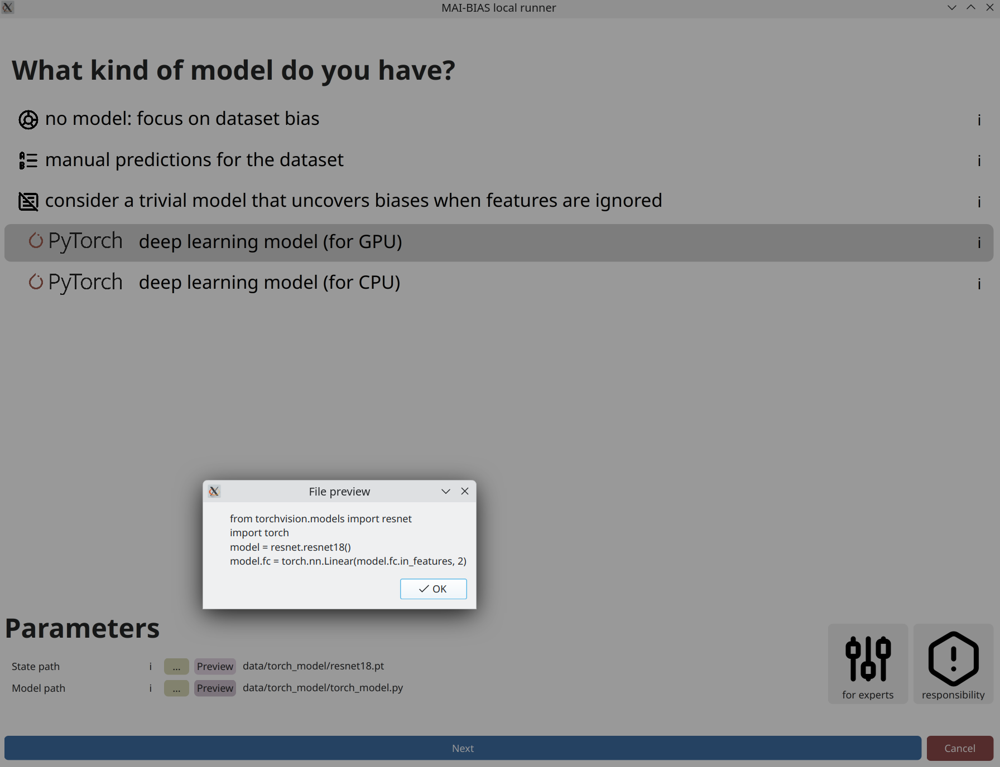
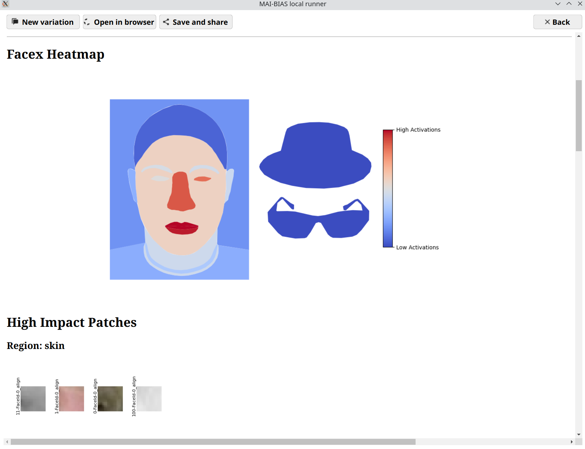

Requirements
This tutorial assumes that you have the MAI-BIAS toolkit already installed and a computer vision dataset and model available. Find installation instructions here, and we will use a toy model and dataset from our integration test data here. You can use other urls or -if you are running the local runner- local files too. Everything shown below is for the local runner.
Some technical terms are involved; these will be explained, but realistically running computer vision experiments requires obtaining a dataset and understanding how it is structured. Expert instructions, like those below, can usually cover this. It is also assumed that you have some basic familiarity with the local runner. If unsure, read first how to audit a tabular dataset in 10 clicks here here.
Dataset
From the runner's starting screen, start a new analysis. The dataset selection screen opens, and we will load a dataset of human faces (you can use any dataset depicting humans).
In general, model creators or data owners are responsible for providing information like the above to non-technical people. Once inputted once, you can create variations of the same run so that you do not need to re-enter information.

Model
From the runner's starting screen, start a new analysis. The dataset selection screen opens, and we will load a dataset of human faces (you can use any dataset depicting humans).
In general, model creators or data owners are responsible for providing information like the above to non-technical people. Once inputted once, you can create variations of the same run so that you do not need to re-enter information.

Analysis parameters

Results
An interactive version of these results can be found here.
